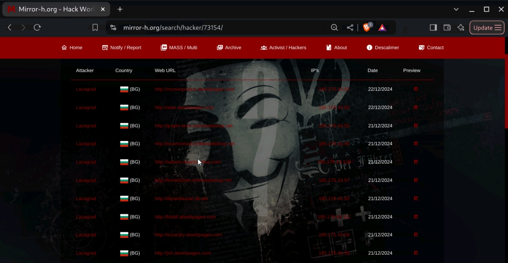

"Rade3 Edwan" campaign 32 websites HACKED
2024-12-21
LHT News
As part of the "Rade3 Edwan" campaign, organized by the Lazagrad Hack group, cyber attacks against servers and hostile sites continued to support the Syrian cause. The campaign, which aims to disrupt the enemy's systems and raise awareness about the situation in Syria, has seen a large number of websites of various hostile websites.

Within one day, the Lazagrad Group carried out cyber attacks on more than 32 sites in successive operations, including commercial, educational, and academic sites, as well as other sites related to hostile systems. These attacks targeted internet data centers, and the attack destroyed and deleted many files, as well as leaking data related to these sites. After each hack, the group published links to hacked websites as well as Mirror links to ensure that the stolen data continued to be accessed and downloaded.
Among the hacked websites were many commercial platforms used by commercial companies to display their products, such as http://DeranFauzan.dx.am and http://lemoischer.onlinewebshop.net, as well as academic websites related to e-learning, such as http://Nahom.myartsonline.com and http://examsresult.onlinewebshop.net. The attacks were not limited to this only, but extended to include other sites and projects that were used by the enemies as tools to spread hostile political and media propaganda. The group confirmed in its statements that these attacks are part of its long-term strategy to destabilize the enemies' digital networks and enable the Mujahideen in Syria to confront the repressive regimes.
The main points of the campaign: 32 websites have been hacked so far under the campaign. The target sites included commercial, academic, and governmental platforms. Lazagrad Group has published links to hacked websites, as well as Mirror links, to ensure that the hacked data is preserved. The campaign is part of the continuous support for Syria and the Syrian people in the face of the stalking forces, It is worth noting that the campaign was not limited to hacking these sites, but also included a comprehensive survey of enemies' digital infrastructure, with the aim of collecting vital information that could be used in the future. The group confirmed that it will continue in these attacks until its goals are achieved in supporting the Syrian revolution and achieving justice for the Syrian people. Continuing cyber-attacks is part of a broader strategy to liberate digital space from Western hegemony, by targeting regimes that contribute to strengthening bullying peoples, especially in Syria.
 EN
EN